Slecht wegdek
Dit bord waarschuwt voor een slecht wegdek.
- Pas je snelheid aan.
- Op een onderbord kan worden aangegeven wat er precies aan de weg mankeert.
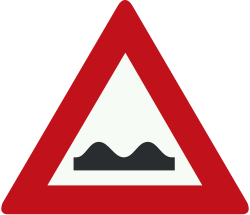
Dit bord waarschuwt voor een slecht wegdek.

Dit bord waarschuwt voor een scherpe bocht naar rechts.
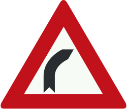
Dit bord waarschuwt voor een S-bocht.
Dit bord geeft aan dat er een steil hellingsstuk volgt.
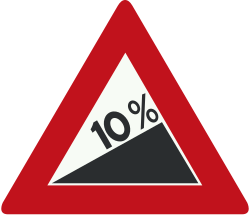
Dit bord waarschuwt voor een gevaarlijke afdaling.
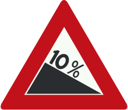
Waarschuwing: je nadert een gevaarlijk kruispunt.
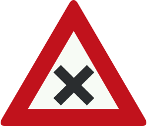
Dit bord geeft aan dat je een rotonde nadert.
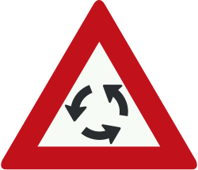
Waarschuwing: je nadert een spoorwegovergang met slagbomen.
Waarschuwing: je komt bij een spoorwegovergang zonder slagbomen.
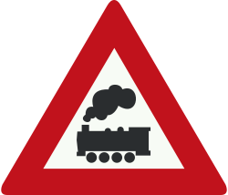
Je nadert een spoorwegovergang met één spoor.
Dit bord geeft aan dat je een spoorwegovergang met meerdere sporen nadert.
Waarschuwing: je nadert een kruising met een tramspoor.
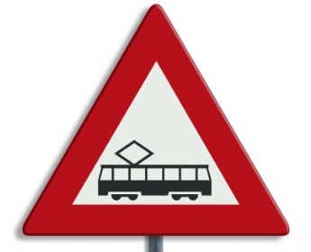
Dit bord waarschuwt dat je een brug nadert die open kan gaan.
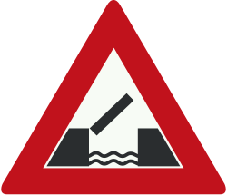
Waarschuwing: er zijn wegwerkzaamheden.
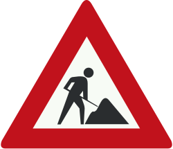
Waarschuwing: je nadert een wegversmalling waarbij de rijbaan smaller wordt aan beide kanten.
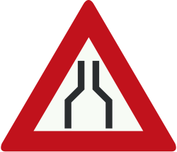
Dit bord geeft aan dat de rijbaan aan de rechterkant smaller wordt.
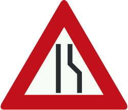
Dit bord waarschuwt voor gevaar van slippen.
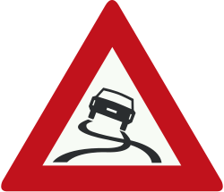